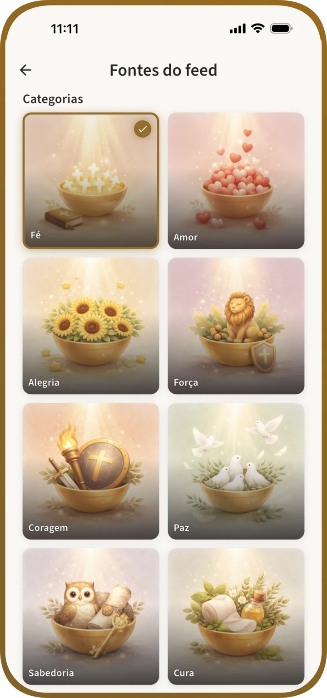
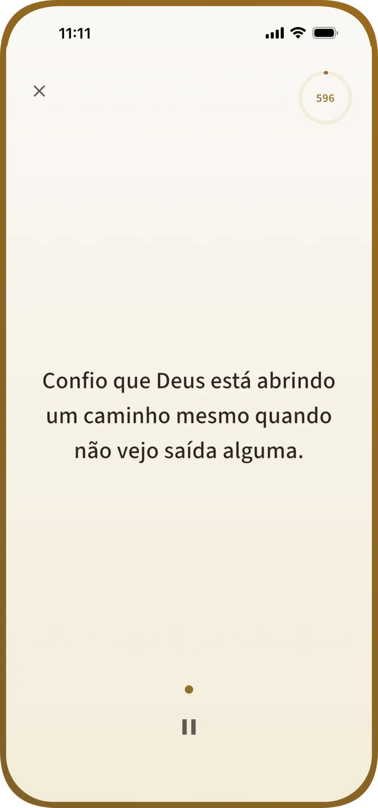
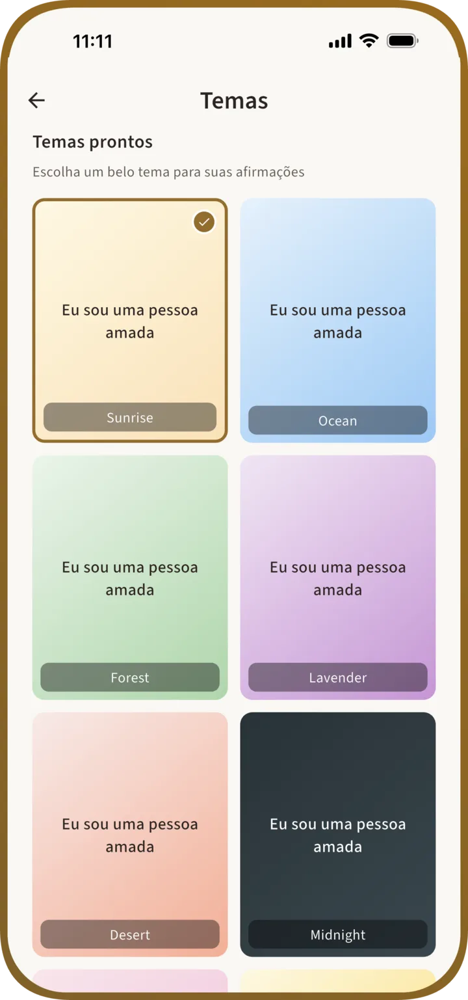

Manna.
Reúna Sua Verdade Diária.
Leve afirmações bíblicas para sua oração e reflexão devocional. Mantenha a verdade de Deus por perto quando precisar de fé, esperança, paz ou força.
A Prática
O que são afirmações cristãs?
Afirmações cristãs ajudam você a voltar à Palavra de Deus quando o dia fica agitado ou incerto. Manna reúne afirmações bíblicas para uma prática breve que aproxima fé, esperança, paz e identidade em Cristo da sua rotina.
“Eu fui criado de modo especial e admirável.”
Salmos 139:14“Tudo posso naquele que me fortalece.”
Filipenses 4:13“Deus não me deu espírito de medo, mas de poder, amor e equilíbrio.”
2 Timóteo 1:7Cada frase se apoia na verdade bíblica. As afirmações bíblicas oferecem um pensamento claro quando ansiedade, luto, pressão ou dúvida dificultam lembrar as promessas de Deus.
“Não se amoldem ao padrão deste mundo, mas transformem-se pela renovação da mente.”
Romanos 12:2
O Aplicativo
As promessas de Deus, apresentadas com beleza.
Defina um lembrete de oração no horário que combina com sua rotina.
Afirmações bíblicas diárias

Fé para cada fase

Pratique sem pressa

Temas
Recursos
Uma prática diária, não apenas outro aplicativo.
Afirmações bíblicas diárias
Crie um ritmo com afirmações diárias e afirmações cristãs.
Fé para cada fase
Cada frase se apoia na verdade bíblica.
Prática
O modo de prática abre espaço para meditação cristã na Palavra de Deus.
Temas
Personalize a experiência.
Lembretes
Defina um lembrete de oração no horário que combina com sua rotina.
Afirmações Personalizadas
Personalize a experiência.
Por que Manna
Verdade renovada a cada manhã.
Uma prática que transforma.
Enraizadas nas Escrituras
Cada frase se apoia na verdade bíblica.
Renove Sua Mente Diariamente
Crie um ritmo com afirmações diárias e afirmações cristãs.
Construa uma Fé Inabalável
O modo de prática abre espaço para meditação cristã na Palavra de Deus.
Bonito e Sem Distrações
A biblioteca incluída funciona offline e não exige uma conta. Seus dados pessoais permanecem no dispositivo.
Seu maná diário está esperando.
Reúna Sua Verdade Diária.